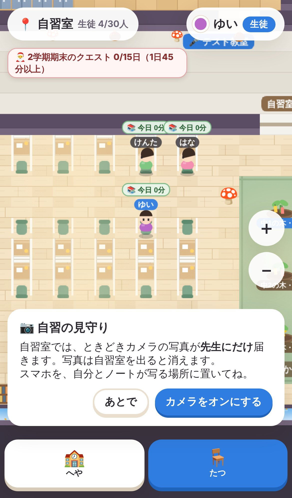
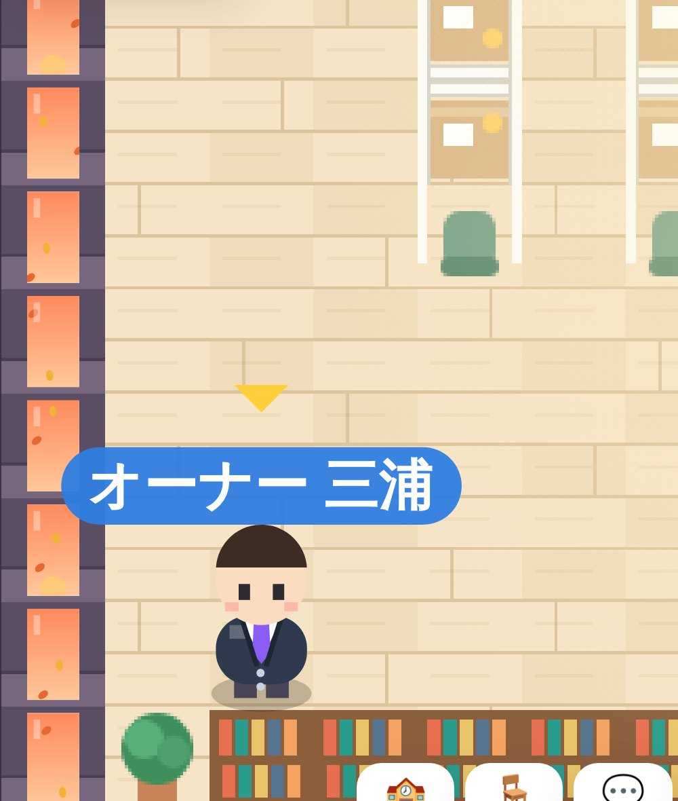
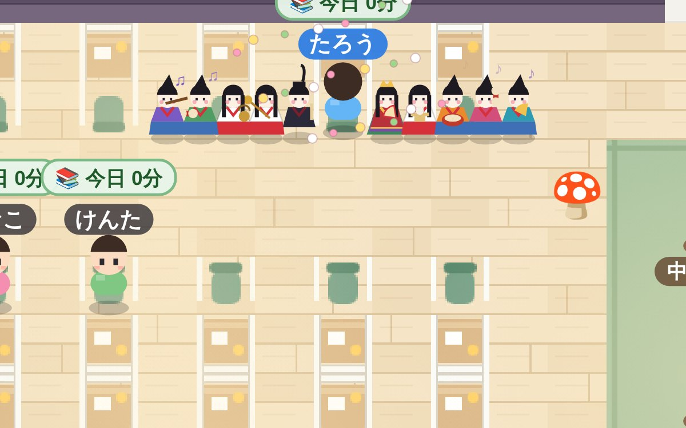
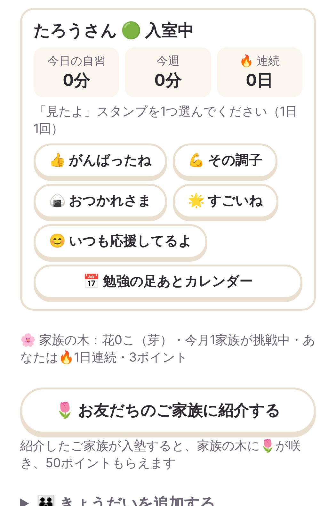
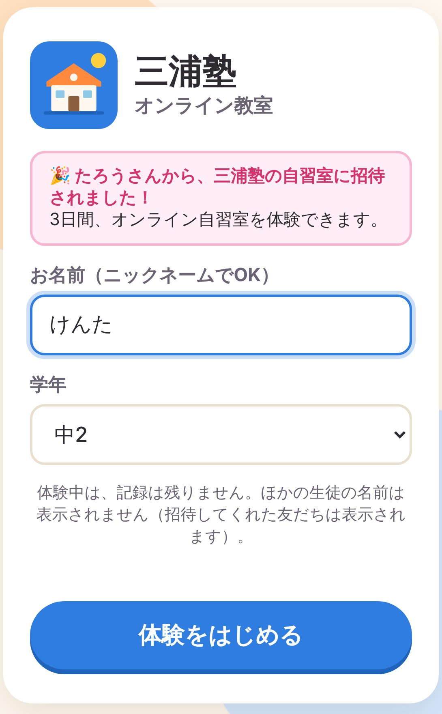

安心・集中
遊び場にならない、集中のしくみ
- 📷 見守りカメラ：スマホを自分とノートが写る所に。ランダムな時間に写真が先生にだけ届き、自習室を出ると消えます（保存しません）。
- 🪑 10秒以上立ち歩くと「席にすわって勉強しよう！」と席えらびが出ます。
- 💬 吹き出し・スタンプは先生が話しかけたときだけ。生徒どうしの雑談はできません。
- 📱 アプリを閉じる・ほかの画面を見ると時間は止まります。

見守りカメラの案内

着席のうながし


学年の最低時間（小学生 45分・中1 45分・中2 60分・中3 90分）をこえた日が続くと🔥が増えます。授業の曜日は途切れません。
学年の平均自習時間で木が育ちます（協力のしくみ）。今学期の目標は先生が確認して短冊に。達成で⭐。

🔥30日（高校生は4週）で、自分だけの指定席。金色の名前プレートがつきます。

| 時間 | 数える時間 | 使い道 |
|---|---|---|
| 📚 今日の勉強時間 | いつでも（夜・土日も） | 今日○分・🔥・クエスト・保護者の画面 |
| 🎁 ポイントになる時間 | 中学生 6:00〜7:30・19:00〜23:00／小学生 6:00〜7:30・15:00〜18:00／高校生 16:00〜23:00 | ポイント・学年の木 |

朝6:00〜7:30に30分自習すると、早起きスタンプと＋3ポイント。ロビーの壁の掲示板に成功した順に名前がのり、その日は名札に🌅がつきます。

月曜〜日曜の勉強時間の合計で決まります。何日に分けてもOK。🔥は🥉以上の週が続いた数。
| メダル | 週の合計 | ボーナス |
|---|---|---|
| 🥉 ブロンズ | 4時間 | ＋10 |
| 🥈 シルバー | 6時間 | ＋20 |
| 🥇 ゴールド | 9時間 | ＋30 |

テスト用ブース2つ。順番待ちの間も、うしろの席で自習時間に。

小学生だけのカラフルな自習室。先生の声と画面共有も届くので、保護者会もここで行えます。

窓は朝焼け・青空・夕焼け・星空に。春は桜、冬は雪。飾りは1年で23種類。


| クエスト | 期間 | ごほうび |
|---|---|---|
| 🎋 1学期中間・期末 | 5月・6月 各15日 | 7/1〜20 彦星（両方で織姫も） |
| 🎅 2学期中間・期末 | 10月・11月 各15日 | 12/1〜25 サンタ（両方でトナカイも） |
| 🎎 3学期学年末 | 1/20〜2/28 15日〜 | 3/1〜20 ひな人形の行列 |


| おうちの方がすること | お子さまに起きること・効果 |
|---|---|
| 👍「見たよ」スタンプ | 次の入室で「🏠 おうちの人から：がんばったね」→ 見てもらえている実感 |
| 🌸 家族の木に花 | 「今月○家族が挑戦中」→ 塾全体で応援されている空気 |
| 📅 足あとカレンダー | 「この日2時間がんばったね」と具体的にほめられる |
| 🛋 ソファから見守り | 「🏠 保護者」とだけ表示 → はずかしくない見守り |
| 📝 保護者も毎日5問 | 「今日の問題なんだった？」→ 親子の会話、親がお手本に |
時間はアプリが自動で記録。「勉強しなさい」と言わなくても様子がわかります。🔥やクエストは子ども自身の目標。おうちの方はできた日をほめる係です。


画面共有ができる小学生自習室で保護者会を行えます。その時間は全部の教室を見学でき、子どもと同じルールで体験できます（生徒は入れません）。
ロビーの面談ブースは、塾が許可した方だけ（塾長のほかに3人まで）入れます。通話と画面共有で、成績表を見ながらお話しできます。
ロビーの黒板に、先生からのメッセージを書きます。



塾からIDとパスワードをお渡しします。スマホ・タブレット・パソコンのブラウザで開くだけ。ホーム画面に追加するとアプリのように使えます。
塾から招待コードをお渡しします。登録画面でコードを入力し、お名前・ID・パスワードを決めてください。